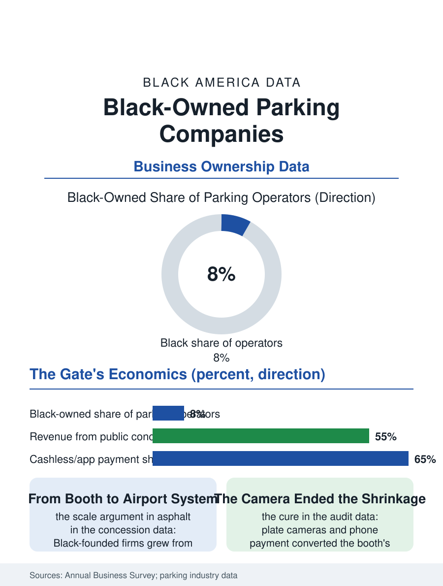

Black Business
The Scarcity's Manager: Black-Owned Parking Companies
From the single lot's booth to entire airport systems, managing the city's scarcest surface invisibly. The parking file.

The parking company operates the city's least loved real estate: the lots and garages whose gates and booths monetize the curb's scarcity, a business of municipal contracts and private leases in which Black-founded firms have won some of the largest airport and city parking operations in the country. The business census folds the trade into the support services for transportation. This article reads the parking file.
The Gate and the Contract
The model's economics are the location's monopoly rented by the hour: the operator's contract, whether the management agreement on the owner's garage or the concession at the airport and the hospital, prices the labor, the enforcement, and the revenue's integrity, the cash's shrinkage being the trade's original sin and the license plate camera and the phone's payment its modern cure, each converting the booth's honesty problem into a data system whose audit the owner can finally run. The municipal file is the trade's commanding heights: the city parking systems and the airport authorities' concessions, allocated by the procurement file's process, in which the disadvantaged business programs have their transportation form, and through which several Black-founded firms grew from the single lot to the operation of entire airport systems' parking, among the business section's largest Black enterprises by revenue, built on a commodity the traveler curses and pays in the same motion. The event file is the operator's surge economy, the stadium's and the festival's thousands arriving in the same hour and departing in the same twenty minutes, a choreography of cones and attendants and pre-sold passes whose failure is the city's gridlock and whose success is invisible, in the trade's familiar pattern, the operator's name known to the city only on the night it fails. The residential permit districts and the hospital's validating desk add the file's civic tiers, the operator as the administrator of the neighborhood's own rationing, a public function in a private uniform whose fairness the residents audit at the curb daily.
Meters, Apps, and the Curb's Future
The technology file is the curb's repricing in progress: the meter's replacement by the app's zone, the garage's gate by the camera's plate read, and the curb itself, the loading and the ride-hail and the delivery's contest for the same twenty feet, becoming a managed asset whose data the operators now sell back to the cities as the planning file's raw material. The labor file is the booth's and the lot's attendants, a workforce of the night and weather files, whose numbers the automation's each wave thins and whose union file in the great cities is among the service labor movement's older locals. The electric file arrives as the charger's siting inside the garage, the operator becoming the fueling file's landlord in the pattern of the gas station's.
The Scarcity's Manager
The parking file closes on the firm's position as the manager of the city's scarcest surface, because the curb and the lot are where the urban economy's every other file comes to rest, and the operator's data, the arrivals and the durations, are the district's diary kept in transactions. The Black-founded majors' place in the file is the business section's scale argument made in asphalt: from the single lot's booth to the airport system's thousands of spaces, on contracts won in the procurement's open competition, a climb the file records without ornament. The census counts the parking revenue within the transportation support totals, the operators' own association counting the industry's spaces in the tens of millions. The file's last entry is the gate's arm at the airport's garage at the holiday peak, rising on the plate's read for the ten-thousandth car of the day, under a contract whose operator's name the travelers never learn, the scarcity's manager invisible inside his own efficiency, which is the trade's definition of a job done right. The booth's attendant at the hospital's garage holds the file's most human post, the face the worst days of strangers begin and end with, a service no camera has yet been built to perform. The worst days pass through his booth twice, and his courtesy is the hospital's first and last medicine. He waves the regulars through by name, which no system has yet automated.
More in Black Business
Black-Owned Businesses: Counts, Receipts, and the Representation Gap
About 161,000 Black-owned employer firms and three million solo ventures: how the Census Bureau counts Black business ownership, where firms concentrate, and the gap between population share and business share.
Black Median Net Worth: The Wealth Gap in Federal Reserve Data
The Federal Reserve puts Black median family net worth at $44,900, against $285,000 for White families — about 16 cents on the dollar. The widest gap in economic data.
Black Buying Power: The $1.8 Trillion Consumer Economy
Black buying power is estimated at about $1.8 trillion — larger than the economy of most nations. What the figure measures, who produces it, and what it buys.
Source: U.S. Census Bureau, Annual Business Survey for parking services; National Parking Association and airport concession data.